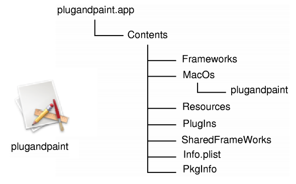
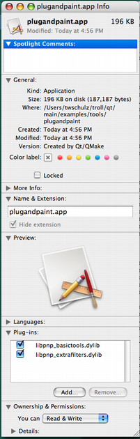

Qt for macOS - Deployment
This document describes how to create a macOS bundle and make sure that the application finds the resources it needs at run-time. We demonstrate the procedures in terms of deploying the Plug & Paint example application that comes with the Qt installation package.
The Qt installers for macOS include a deployment tool that automates the procedures described here.
The Bundle
On macOS, a GUI application must be built and run from a bundle, which is a directory structure that appears as a single entity when viewed in the Finder. A bundle for an application typically contains the executable and all the resources it needs. Here is the snapshot of an application bundle structure:

The bundle provides many advantages to the user:
- It is easily installable as it is identified as a single entity.
- Information about a bundle is accessible from code.
This is specific to macOS and beyond the scope of this document. For more information about bundles, see Apple's Developer Website.
qmake automatically generates a bundle for your application. To disable this, add the following statement to your application's project file (.pro):
CONFIG-=app_bundle
Static Linking
If you want to keep things simple and have a few files to deploy, you must build your application with statically linked libraries.
Building Qt Statically
Start by installing a static version of the Qt library. Remember that you cannot use plugins and that you must build the dependent libraries such as image formats, SQL drivers, and so on with static linking.
cd /path/to/Qt ./configure -static <other parameters> make sub-src
You can check the various options that are available by running configure -help.
Linking the Application to the Static Version of Qt
Once Qt is built statically, the next step is to regenerate the makefile and rebuild the application. First, we must go into the directory that contains the application:
cd /path/to/Qt/examples/widgets/tools/plugandpaint/app
Now run qmake to create a new makefile for the application, and do a clean build to create the statically linked executable:
make clean
qmake -config release
make
You probably want to link against the release libraries, and you can specify this when invoking qmake. If you have Xcode Tools 1.5 or higher installed, you may want to take advantage of "dead code stripping" to reduce the size of your binary even more. You can do this by passing LIBS+= -dead_strip to qmake in addition to the -config release parameter.
Now, provided that everything compiled and linked without any errors, we should have a plugandpaint.app bundle ready for deployment. Try installing the bundle on a machine running macOS that does not have Qt or any Qt applications installed.
You can check what other libraries your application links to using the otool:
otool -L plugandpaint.app/Contents/MacOs/plugandpaint
Here is what the output looks like for the statically linked Plug & Paint:
plugandpaint.app/Contents/MacOS/plugandpaint: /System/Library/Frameworks/Carbon.framework/Versions/A/Carbon (compatibility version 2.0.0, current version 128.0.0) /System/Library/Frameworks/QuickTime.framework/Versions/A/QuickTime (compatibility version 1.0.0, current version 10.0.0) /usr/lib/libz.1.dylib (compatibility version 1.0.0, current version 1.2.3) /System/Library/Frameworks/ApplicationServices.framework/Versions/A/ApplicationServices (compatibility version 1.0.0, current version 22.0.0) /usr/lib/libstdc++.6.dylib (compatibility version 7.0.0, current version 7.3.0) /usr/lib/libgcc_s.1.dylib (compatibility version 1.0.0, current version 1.0.0) /usr/lib/libmx.A.dylib (compatibility version 1.0.0, current version 92.0.0) /usr/lib/libSystem.B.dylib (compatibility version 1.0.0, current version 88.0.0)
If you see Qt libraries in the output, it probably means that you have both dynamic and static Qt libraries installed on your machine. The linker always chooses dynamic linking over static. If you want to use only static libraries, you can either:
- move your Qt dynamic libraries (
.dylibs) away to another directory while you link the application and then move them back, - or edit the
Makefileand replace link lines for the Qt libraries with the absolute path to the static libraries.
For example, replace the following:
-lQtGui
with this:
/where/static/qt/lib/is/libQtGui.a
The Plug & Paint example consists of several components: The core application (Plug & Paint), and the Basic Tools and Extra Filters plugins. As we cannot deploy plugins using the static linking approach, the bundle we have prepared so far is incomplete. The application will run, but the functionality will be disabled due to the missing plugins. To deploy plugin-based applications we should use the framework approach, which is specific to macOS.
Frameworks
In this approach, ensure that the Qt runtime is redistributed correctly with the application bundle, and that the plugins are installed in the correct location so that the application finds them.
There are two ways to distribute Qt with your application in the frameworks approach:
- Private framework within your application bundle.
- Standard framework (alternatively use the Qt frameworks in the installed binary).
The former is good if you have Qt built in a special way, or want to make sure the framework is there. It just comes down to where you place the Qt frameworks.
The latter option is good if you have many Qt applications and you want them use a single Qt framework rather than multiple versions of it.
Building Qt as Frameworks
We assume that you already have installed Qt as frameworks, which is the default when installing Qt, in the /path/to/Qt directory. For more information on how to build Qt without Frameworks, visit the Qt for macOS - Specific Issues documentation.
When installing, the identification name of the frameworks is set. This name is used by the dynamic linker (dyld) to find the libraries for your application.
Linking the Application to Qt as Frameworks
After building Qt as frameworks, we can build the Plug & Paint application. First, we must go to the directory that contains the application:
cd /path/to/Qt/examples/widgets/tools/plugandpaint/app
Run qmake to create a new makefile for the application, and do a clean build to create the dynamically linked executable:
make clean
qmake -config release
make
This builds the core application. Use the following to build the plugins:
cd ../plugandpaint/plugins make clean qmake -config release make
Now run the otool for the Qt frameworks, for example Qt Gui:
otool -L QtGui.framework/QtGui
You would get the following output:
QtGui.framework/QtGui: /path/to/Qt/lib/QtGui.framework/Versions/4.0/QtGui (compatibility version 4.0.0, current version 4.0.1) /System/Library/Frameworks/Carbon.framework/Versions/A/Carbon (compatibility version 2.0.0, current version 128.0.0) /System/Library/Frameworks/QuickTime.framework/Versions/A/QuickTime (compatibility version 1.0.0, current version 10.0.0) /path/to/Qt/QtCore.framework/Versions/4.0/QtCore (compatibility version 4.0.0, current version 4.0.1) /usr/lib/libz.1.dylib (compatibility version 1.0.0, current version 1.2.3) /System/Library/Frameworks/ApplicationServices.framework/Versions/A/ApplicationServices (compatibility version 1.0.0, current version 22.0.0) /usr/lib/libstdc++.6.dylib (compatibility version 7.0.0, current version 7.3.0) /usr/lib/libgcc_s.1.dylib (compatibility version 1.0.0, current version 1.0.0) /usr/lib/libmx.A.dylib (compatibility version 1.0.0, current version 92.0.0) /usr/lib/libSystem.B.dylib (compatibility version 1.0.0, current version 88.0.0)
For the Qt frameworks, the first line (i.e. path/to/Qt/lib/QtGui.framework/Versions/4/QtGui (compatibility version 4.0.0, current version 4.0.1)) becomes the framework's identification name which is used by the dynamic linker (dyld).
But when you are deploying the application, your users may not have the Qt frameworks installed in the specified location. For that reason, you must either provide the frameworks in an agreed location, or store the frameworks in the bundle. Regardless of which solution you choose, you must make sure that the frameworks return the proper identification name for themselves, and that the application looks for these names. Luckily we can control this with the install_name_tool command-line tool.
The install_name_tool works in two modes, -id and -change. The -id mode is for libraries and frameworks, and allows us to specify a new identification name. We use the -change mode to change the paths in the application.
Let's test this out by copying the Qt frameworks into the Plug & Paint bundle. Looking at otool's output for the bundle, we can see that we must copy both the QtCore and QtGui frameworks into the bundle. We will assume that we are in the directory where we built the bundle.
mkdir plugandpaint.app/Contents/Frameworks cp -R /path/to/Qt/lib/QtCore.framework plugandpaint.app/Contents/Frameworks cp -R /path/to/Qt/lib/QtGui.framework plugandpaint.app/Contents/Frameworks
First we create a Frameworks directory inside the bundle. This follows the macOS application convention. We then copy the frameworks into the new directory. As frameworks contain symbolic links, we use the -R option.
install_name_tool -id @executable_path/../Frameworks/QtCore.framework/Versions/4.0/QtCore plugandpaint.app/Contents/Frameworks/QtCore.framework/Versions/4.0/QtCore install_name_tool -id @executable_path/../Frameworks/QtGui.framework/Versions/4.0/QtGui plugandpaint.app/Contents/Frameworks/QtGui.framework/Versions/4.0/QtGui
Then we run install_name_tool to set the identification names for the frameworks. The first argument after -id is the new name, and the second argument is the framework that we want to rename. The text @executable_path is a special dyld variable telling dyld to start looking where the executable is located. The new names specifies that these frameworks are located in the directory directly under the Frameworks directory.
install_name_tool -change path/to/Qt/lib/QtCore.framework/Versions/4.0/QtCore @executable_path/../Frameworks/QtCore.framework/Versions/4.0/QtCore plugandpaint.app/Contents/MacOs/plugandpaint install_name_tool -change path/to/qt/lib/QtGui.framework/Versions/4.0/QtGui @executable_path/../Frameworks/QtGui.framework/Versions/4.0/QtGui plugandpaint.app/Contents/MacOs/plugandpaint
Now, the dynamic linker knows where to look for QtCore and QtGui. We must ensure that the application also knows where to find the library, using install_name_tool's -change mode. This basically comes down to string replacement, to match the identification names that we set earlier to the frameworks.
Finally, the QtGui framework depends on QtCore, so we must remember to change the reference for QtGui:
install_name_tool -change path/to/Qt/lib/QtCore.framework/Versions/4.0/QtCore @executable_path/../Frameworks/QtCore.framework/Versions/4.0/QtCore plugandpaint.app/Contents/Frameworks/QtGui.framework/Versions/4.0/QtGui
After this, we run otool again and see that the application can find the libraries.
The plugins for the Plug & Paint example makes it interesting. The basic steps we need to follow with plugins are:
- put the plugins inside the bundle,
- run the
install_name_toolto check whether the plugins are using the correct library, - and ensure that the application knows where to look for the plugins.
We can put the plugins anywhere we want in the bundle, but the best location is to put them under Contents/Plugins. When we built the Plug & Paint plugins, based on the DESTDIR variable in their .pro file, the plugins' .dylib files are in the plugins subdirectory under the plugandpaint directory. We just have to move this directory to the correct location.
mv plugins plugandpaint.app/Contents
For example, If we run otool on the Basic Tools plugin's .dylib file, we get the following information.
libpnp_basictools.dylib: libpnp_basictools.dylib (compatibility version 0.0.0, current version 0.0.0) /path/to/Qt/lib/QtGui.framework/Versions/4.0/QtGui (compatibility version 4.0.0, current version 4.0.1) /System/Library/Frameworks/Carbon.framework/Versions/A/Carbon (compatibility version 2.0.0, current version 128.0.0) /System/Library/Frameworks/QuickTime.framework/Versions/A/QuickTime (compatibility version 1.0.0, current version 10.0.0) /path/to/Qt/lib/QtCore.framework/Versions/4.0/QtCore (compatibility version 4.0.0, current version 4.0.1) /usr/lib/libz.1.dylib (compatibility version 1.0.0, current version 1.2.3) /System/Library/Frameworks/ApplicationServices.framework/Versions/A/ApplicationServices (compatibility version 1.0.0, current version 22.0.0) /usr/lib/libstdc++.6.dylib (compatibility version 7.0.0, current version 7.3.0) /usr/lib/libgcc_s.1.dylib (compatibility version 1.0.0, current version 1.0.0) /usr/lib/libmx.A.dylib (compatibility version 1.0.0, current version 92.0.0) /usr/lib/libSystem.B.dylib (compatibility version 1.0.0, current version 88.0.0)
Then we can see that the plugin links to the Qt frameworks it was built against. As we want the plugins to use the framework in the application bundle, we change them the same way as we did for the application. For example for the Basic Tools plugin:
install_name_tool -change /path/to/Qt/lib/QtCore.framework/Versions/4.0/QtCore @executable_path/../Frameworks/QtCore.framework/Versions/4.0/QtCore plugandpaint.app/Contents/plugins/libpnp_basictools.dylib install_name_tool -change /path/to/Qt/lib/QtGui.framework/Versions/4.0/QtGui @executable_path/../Frameworks/QtGui.framework/Versions/4.0/QtGui plugandpaint.app/Contents/plugins/libpnp_basictools.dylib
We must also modify the code in tools/plugandpaint/mainwindow.cpp to cdUp() to ensure that the application finds the plugins. Add the following code to the mainwindow.cpp file:
#elif defined(Q_OS_MAC) if (pluginsDir.dirName() == "MacOS") { pluginsDir.cdUp(); } #endif
 | The additional code in tools/plugandpaint/mainwindow.cpp also enables us to view the plugins in the Finder, as shown in the image.We can also add plugins extending Qt, for example adding SQL drivers or image formats. We just need to follow the directory structure outlined in plugin documentation, and make sure they are included in the QCoreApplication::libraryPaths(). Let's quickly do this with the image formats, following the procedure outlined earlier. Copy Qt's image format plugins into the bundle: cp -R /path/to/Qt/plugins/imageformats pluginandpaint.app/Contents/plugins Use install_name_tool -change /path/to/Qt/lib/QtGui.framework/Versions/4.0/QtGui @executable_path/../Frameworks/QtGui.framework/Versions/4.0/QtGui plugandpaint.app/Contents/plugins/imageformats/libqjpeg.dylib install_name_tool -change /path/to/Qt/lib/QtCore.framework/Versions/4.0/QtCore @executable_path/../Frameworks/QtCore.framework/Versions/4.0/QtCore plugandpaint.app/Contents/plugins/imageformats/libqjpeg.dylib Update the source code in QDir dir(QCoreApplication::applicationDirPath()); dir.cdUp(); dir.cd("plugins"); QCoreApplication::setLibraryPaths(QStringList(dir.absolutePath())); First, we tell the application to only look for plugins in this directory. In our case, we want the application to look for only those plugins that we distribute with the bundle. If we were part of a bigger Qt installation we could have used QCoreApplication::addLibraryPath() instead. |
Warning: While deploying plugins, we make changes to the source code and that resets the default identification names when the application is rebuilt. So you must repeat the process of making your application link to the correct Qt frameworks in the bundle using install_name_tool.
Now you should be able to move the application to another macOS machine and run it without Qt installed. Alternatively, you can move your frameworks that live outside of the bundle to another directory and see if the application still runs.
If you store the frameworks in another location outside the bundle, the technique of linking your application is similar; you must make sure that the application and the frameworks agree where to be looking for the Qt libraries as well as the plugins.
Creating the Application Package
When you are done linking your application to Qt, either statically or as frameworks, the application is ready to be distributed. For more information, refer to the Apple Developer website.
Although the process of deploying an application do have some pitfalls, once you know the various issues you can easily create packages that all your macOS users will enjoy.
Application Dependencies
Qt Plugins
All Qt GUI applications require a plugin that implements the Qt Platform Abstraction (QPA) layer in Qt 5. For macOS, the name of the platform plugin is libqcocoa.dylib. This file must be located within a specific subdirectory (by default, platforms) under your distribution directory. Alternatively, it is possible to adjust the search path Qt uses to find its plugins, as described below.
Your application may also depend on one or more Qt plugins, such as the JPEG image format plugin or a SQL driver plugin. Be sure to distribute any Qt plugins that you need with your application. Similar to the platform plugin, each type of plugin must be located within a specific subdirectory (such as imageformats or sqldrivers) in your distribution directory.
The search path for Qt plugins (as well as a few other paths) is hard-coded into the QtCore library. By default, the first plugin search path will be hard-coded as /path/to/Qt/plugins. But using pre-determined paths has certain disadvantages. For example, they may not exist on the target machine. So you must check various alternatives to ensure that the Qt plugins are found:
- Using
qt.conf. This is the recommended approach as it provides the most flexibility. - Using QApplication::addLibraryPath() or QApplication::setLibraryPaths().
- Using a third party installation utility to change the hard-coded paths in the QtCore library.
The How to Create Qt Plugins document outlines the issues you need to pay attention to when building and deploying plugins for Qt applications.
Additional Libraries
You can check which libraries your application is linking against by using otool. Run this with the application path as an argument:
otool -L MyApp.app/Contents/MacOS/MyApp
Compiler-specific libraries rarely have to be redistributed with your application. But there are several ways to deploy applications, as Qt can be configured, built, and installed in several ways on macOS. Typically your goals help determine how you are going to deploy the application. The last sections describe a few things that you must be aware of while deploying your application.
macOS Version Dependencies
Apple platforms have a built-in way to express the OS versions that an application supports, which allows older versions of the platforms to automatically display a user friendly error message prompting the user to update their OS, as opposed to crashing and displaying a stack trace.
The main concepts involved in expressing support for a particular range of OS versions are:
- Deployment target specifies the hard minimum version of macOS, iOS, tvOS, or watchOS that your application supports.
- SDK version specifies the soft maximum version of macOS, iOS, tvOS, or watchOS that your application supports.
When you develop an application for an Apple platform, you should always use the latest version of Xcode and the latest SDK available at the time of development. On some platforms, like iOS, you will actually be rejected from the App Store if you do not. Therefore, the SDK version is always greater than or equal to the deployment target.
When you develop an application for an Apple platform, you must set the deployment target. Various build tools within the Xcode toolchain all have a flag which you can use to set this value, including but not limited to the compiler and linker. By setting the deployment target value, you are explicitly declaring that your application must work on at least that version, and will not work with any earlier versions of the OS. It is then up to you to ensure that your use of the system APIs matches what you have declared. Since the compiler knows what you have declared, it can help in enforcing that.
The SDK version is considered a soft maximum version of the OS that an application is compatible with in the way that if the application is built with an SDK, it will continue to use the behaviors of that SDK even on newer OS versions, because the OS checks the binary's load commands and emulates backwards compatibility with the older OS. For example, if an application is built with the macOS 10.12 SDK, it will continue to use 10.12 behaviors even on 10.13 and above.
However, Mach-O binaries are inherently forward compatible. For example, an application built with the iOS 9 SDK will run just fine on iOS 10, but might not be opted into whatever behavior changes may have been made to certain functionality on the new release, until that application is recompiled against that newer SDK.
The minimum OS version can be expressed to the system by the compiler and linker flags that embed it into the Mach-O binary. In addition, the LSMinimumSystemVersion key must be set in the application's app bundle. This value must be equal to the value passed to the compiler and linker, because on macOS it will allow the OS to display a user friendly error dialog that says the application requires a newer version of the OS as opposed to a crash dialog. The LSMinimumSystemVersion is also the key that the App Store uses to display the required OS version; the compiler and linker flags have no power there.
For the most part, Qt applications will work without problems. For example, in qmake, the Qt mkspecs set QMAKE_IOS_DEPLOYMENT_TARGET, QMAKE_MACOSX_DEPLOYMENT_TARGET, QMAKE_TVOS_DEPLOYMENT_TARGET, or QMAKE_WATCHOS_DEPLOYMENT_TARGET to the minimum version that Qt itself supports. Similarly, in Qbs, the Qt modules set cpp.minimumIosVersion, cpp.minimumMacosVersion, cpp.minimumTvosVersion, or cpp.minimumWatchosVersion to the minimum version that Qt itself supports.
However, you must take care when you manually set your own target version. If you set it to a value higher than what Qt requires and supply your own Info.plist file, you must add an LSMinimumSystemVersion entry to the Info.plist that matches the value of the deployment target, because the OS will use the LSMinimumSystemVersion value as the authoritative one.
If you specify a deployment target value lower than what Qt requires, the application will almost certainly crash somewhere in the Qt libraries when run on an older version than Qt supports. Therefore, make sure that the actual build system code reflects the minimum OS version that is actually required.
The Mac Deployment Tool
The Mac deployment tool can be found in QTDIR/bin/macdeployqt. It is designed to automate the process of creating a deployable application bundle that contains the Qt libraries as private frameworks.
The mac deployment tool also deploys the Qt plugins, according to the following rules (unless -no-plugins option is used):
- The platform plugin is always deployed.
- Debug versions of the plugins are not deployed.
- The designer plugins are not deployed.
- The image format plugins are always deployed.
- The print support plugin is always deployed.
- SQL driver plugins are deployed if the application uses the Qt SQL module.
- Script plugins are deployed if the application uses the Qt Script module.
- The SVG icon plugin is deployed if the application uses the Qt SVG module.
- The accessibility plugin is always deployed.
To include a 3rd party library in the application bundle, copy the library into the bundle manually, after the bundle is created.
macdeployqt supports the following options:
| Option | Description |
|---|---|
-verbose=<0-3> | 0 = no output, 1 = error/warning (default), 2 = normal, 3 = debug |
-no-plugins | Skip plugin deployment |
-dmg | Create a .dmg disk image |
-no-strip | Don't run 'strip' on the binaries |
-use-debug-libs | Deploy with debug versions of frameworks and plugins (implies -no-strip) |
-executable=<path> | Let the given executable also use the deployed frameworks |
-qmldir=<path> | Deploy imports used by .qml files in the given path |
-qmlimport=<path> | Add the given path to the QML imports search locations |
-always-overwrite | Copy files even if the target file exists |
-codesign=<ident> | Run codesign with the given identity on all executables |
-appstore-compliant | Skip deployment of components that use private API |
-libpath=<path> | Add the given path to the library search path |
-fs=<filesystem> | Set the filesystem used for the .dmg disk image (defaults to HFS+) |
Note: macOS High Sierra introduced the new Apple File System (APFS). Older versions of macOS cannot read .dmg files that are formatted with APFS. By default, macdeployqt uses the older HFS+ file system for compatibility with all versions of macOS currently supported by Qt. Use the -fs option to specify a different file system.
Volume Name
The volume name of a disk image (the text displayed in the window title of an opened .dmg file) created with -dmg is based on the path to the application when macdeployqt is run. For example, consider the following command that creates a disk image for a Qt Quick application:
macdeployqt /Users/foo/myapp-build/MyApp.app -qmldir=/Users/foo/myapp/qml -dmg
The resulting volume name will be:
/Users/foo/myapp-build/MyApp.app
To ensure that the volume name only contains the application name and not the path on the deployment machine, run macdeployqt in the same directory:
cd /Users/foo/myapp-build macdeployqt MyApp.app -qmldir=/Users/foo/myapp/qml -dmg
The resulting volume name will then be:
MyApp.app